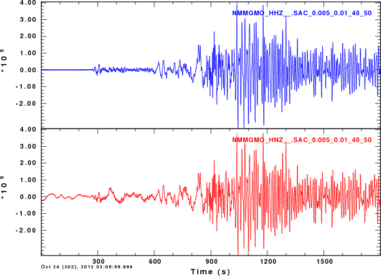

The instrument responses are compared in the next figure. The units are in counts/micron.
* CHANNEL(NSCL)NMMGMO HHZ
* NETWORK NM
* STATION MGMO
* COMPONENT HHZ
* LOCATION
* INPUT UNIT NM
* OUTPUT UNIT COUNT
* DESCRIPTION Mountain Grove, MO
* RATE (HZ) 100.0
* OWNER Cooperative New Madrid Seismic Network
* COORD(SEED) NM MGMO: 37.1540 -92.2687 453.0
* ORIENTATION NM MGMO -- HHZ: 0.0 -90.0 0.0
* LAT-SEED 37.154
* LONG-SEED -92.2687
* ELEV-SEED 453.0
* INSTRMNTTYPE Trillium40=0577=40Sec=Q330HR=2631
* INSTRMNTCMNT Mountain Grove, MO^Cooperative New Madrid Seismic Network^^
* ****
CONSTANT 2.7815E+05
ZEROS 6
0.0000E+00 0.0000E+00
0.0000E+00 0.0000E+00
0.0000E+00 0.0000E+00
-6.8800E+01 0.0000E+00
-3.2300E+02 0.0000E+00
-2.5300E+03 0.0000E+00
POLES 7
-1.1030E-01 1.1110E-01
-1.1030E-01 -1.1110E-01
-8.6300E+01 0.0000E+00
-2.4100E+02 1.7800E+02
-2.4100E+02 -1.7800E+02
-5.3500E+02 7.1900E+02
-5.3500E+02 -7.1900E+02
|
* CHANNEL(NSCL)NMMGMO HNZ
* NETWORK NM
* STATION MGMO
* COMPONENT HNZ
* LOCATION
* INPUT UNIT NM
* OUTPUT UNIT COUNT
* DESCRIPTION Mountain Grove, MO
* RATE (HZ) 100.0
* OWNER Cooperative New Madrid Seismic Network
* COORD(SEED) NM MGMO: 37.1540 -92.2687 453.0
* ORIENTATION NM MGMO -- HNZ: 0.0 -90.0 0.0
* LAT-SEED 37.154
* LONG-SEED -92.2687
* ELEV-SEED 453.0
* INSTRMNTTYPE ES-T=3303=2.0g=Q330SR=2631
* INSTRMNTCMNT Mountain Grove, MO^Cooperative New Madrid Seismic Network^^
* ****
CONSTANT 1.0536E+10
ZEROS 2
0.0000E+00 0.0000E+00
0.0000E+00 0.0000E+00
POLES 4
-9.8100E+02 -1.0090E+03
-9.8100E+02 1.0090E+03
-3.2900E+03 -1.2630E+03
-3.2900E+03 1.2630E+03
|
0 for f < f1 cosine taper between 0 and 1 for f1 < f < f2 1 for f2 < f < f3 cosine taper between 1 and 0 for f3 < f < f4 0 for f > f4
To illustrace the taper operation, I ran the following commands (the italics are comments):
r imp.sac read a time series consisting of an impulse transfer from none to polezero subtype NMMGMO_HHZ__.SAC.pz freqlimits 0.01 0.02 1 2 fft psp plot the spectra
the following plots overlay the original plot obtained without the freqlimits in black and the one using the freqlimits in red. From this plot you can understand how the freqlimits option works
In the next examples, we will deconvolve the traces to ground velocity using two different freqlimits options. To avoid too much text here, I will indicate what was done for the HHZ channel. Exactly the same was done for the HNZ channel. The commands used were as follow:
r NMMGMO_HHZ__.SAC rtr transfer from polezero subtype NMMGMO_HHZ__.SAC.pz to vel freqlimits 0.005 0.01 40 50 w NMMGMO_HHZ__.SAC_0.005_0.01_40_50
r NMMGMO_HHZ__.SAC rtr transfer from polezero subtype NMMGMO_HHZ__.SAC.pz to vel freqlimits 0.050 0.10 5 10 w NMMGMO_HHZ__.SAC_0.050_0.10_5_10
The results are compared in the next set of figures. The file name shows in the image indicates the values of the freqlimits parameters used.
|  |
Recall that the ground motion must be the same. When using the very low frequencies, we see that there is noise before the P-wave arrival, however at later simes, g.,d about 800 sec into the trace, there is a good correspondence. This tells me that the accelerometer will provide a good indication of low frequency ground motion if the ground motion is large compared to noise.
The conclusion that I obtain is that
The next question addresses the choise for the parameters of the freqlimits option.
The simple answer is that the passband must include the signal that you are interested in.
When I perform regional moment tensor inversion, I run the following commands in a bash shell script. Assume the the shell variable TRACE provides the name of the waveform.
#####
# Use Computer Programs in Seismology saclhdr to get values from the trace header
#####
KSTNM=`saclhdr -KSTNM $TRACE`
KCMPNM=`saclhdr -KCMPNM $TRACE`
DELTA=`saclhdr -DELTA $TRACE`
FHH=`echo $DELTA | awk '{print 0.50/$1}' `
FHL=`echo $DELTA | awk '{print 0.25/$1}' `
#####
# FHH is the Nyquist frequency and FHL is 1/2 the Nyquist frequency
# This step is performed so that the filtering is valid for all
# sample rates
#####
gsac << EOF
r ${TRACE}
transfer from polezero subtype ${TRACE}.pz TO VEL FREQLIMITS 0.002 0.003 ${FHL} ${FHH}
w deconvolved_trace.sac
q
EOF